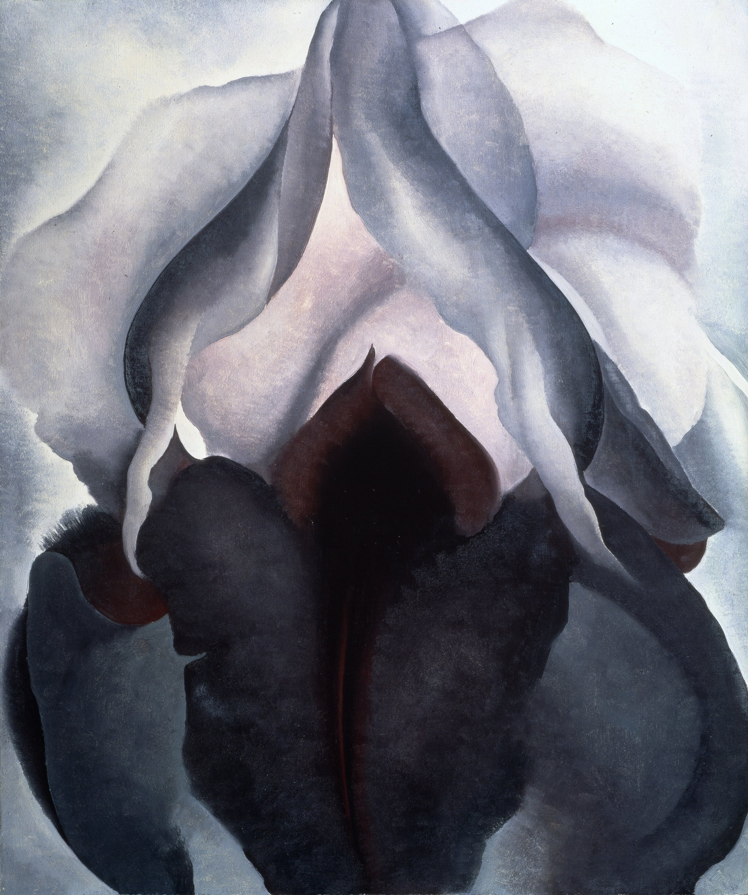

花冠越出四边，两片深灰花瓣向内收拢。左紧右松的轻微失衡，让花保持呼吸；宽阔暗部贴住底边，短暂的花有了纪念碑般的重量。
冷色明度阶从骨白滑向墨紫，6% 酒红藏在花心。没有强烈撞色，只有暖冷与明暗把深度慢慢撑开。
宽而薄的过渡让浅瓣近乎透明；羽毛般短笔触写出花心绒面。蓝黑、紫黑与褐黑叠在一起，暗部因此不是一个平洞。
事实：作品作于 1926 年。O’Keeffe 自 1924 年起画放大的花卉近景，紧裁与尺度转换帮助她确立美国现代主义创新者的声誉。
观点：作品不替花心规定答案，而让观看变慢。此为“每日艺术”原创分析，并非馆方定论。
Georgia O’Keeffe，Black Iris，1926；The Metropolitan Museum of Art，69.278.1。原图取自 Wikimedia Commons；文件页标注作品在美国为公版，其他司法辖区可能受限。图片版权归原作者及相关权利人；事实据馆方，赏析为“每日艺术”原创分析。